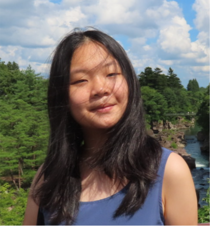
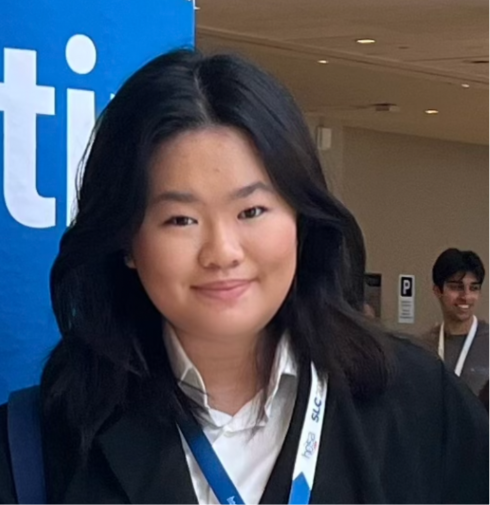
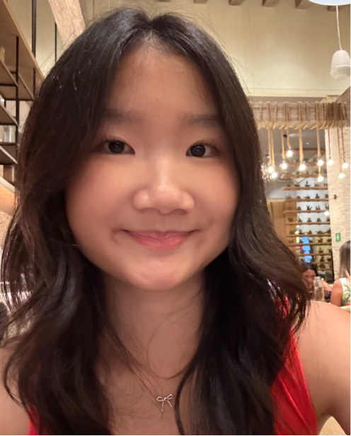
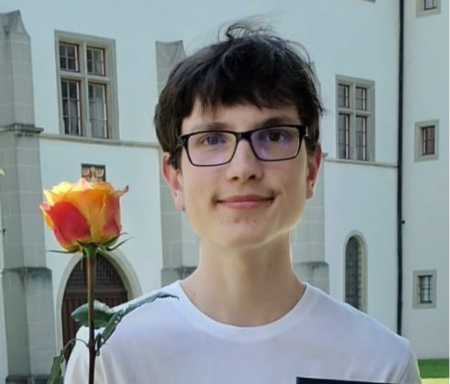
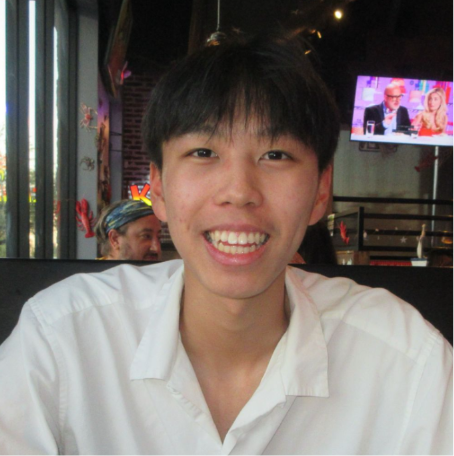
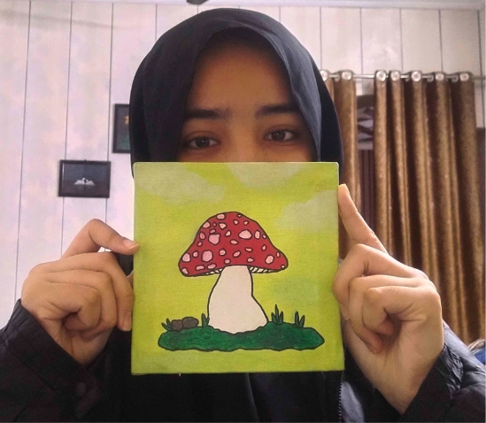

Accessibility
Making STEM opportunities easier to find, understand, and join.
Student-led STEM community
STEM2Connect helps students explore science, technology, engineering, and mathematics through enriching webinars, educational workshops, and a supportive global community.
Meet students who are curious about STEM and excited to learn together.
Discover webinars, workshops, research conversations, and educational opportunities.
Build confidence, ask questions, and find inspiration from researchers and peers.
About & Mission
STEM2Connect was founded to give everyone access to STEM opportunities and educational activities. We create welcoming spaces where students can learn from researchers, explore scientific fields, and connect with others who share their curiosity.
At STEM2Connect, we are dedicated to narrowing the gap between students and the scientific community through enriching webinars, educational workshops, and meaningful dialogue with world-renowned researchers. Our mission is to empower the next generation of STEM leaders by fostering access, insight, and inspiration.
Making STEM opportunities easier to find, understand, and join.
Encouraging students to ask questions, explore ideas, and discover new fields.
Creating a supportive environment where students can learn with and from one another.
Connecting learners with researchers, mentors, and stories that make STEM feel possible.
What We Do
STEM2Connect supports students through educational programming, student-friendly STEM communication, and community spaces designed to make science more approachable.
We host conversations with researchers, students, and STEM speakers so participants can learn directly from people working in science and technology.
We make complex STEM topics more accessible through workshops and beginner-friendly learning sessions.
Through Discord and social platforms, students can discover opportunities, ask questions, and stay updated on upcoming STEM activities.
We share educational content, spotlight opportunities, and help students feel more confident exploring STEM fields.
Events & Webinars
Watch recordings directly from the site and join our Discord to hear about new webinars as soon as they are announced.
July 19th
July 26th
August 9th
August 23rd
A student-focused session exploring how researchers study the brain, how science communication makes STEM more accessible, and how students can begin exploring research pathways.
Watch on YouTube →Featured researchers share how they found early research opportunities, what research looks like day-to-day, and practical advice for students beginning their STEM journey.
Watch on YouTube →An introduction to harmful algal blooms, water quality, ecosystem health, public health impacts, and ways students can take part in environmental science and citizen science.
Watch on YouTube →A hands-on introduction to electronics, circuits, electricity, creative problem-solving, and how students can begin building and exploring engineering through practical projects.
Watch on YouTube →A biology-focused webinar covering plant hormones, photosynthetic adaptations, transport systems, and experimental approaches useful for students interested in biology and research.
Watch on YouTube →Our Team
Our board members help organize events, share opportunities, create educational content, and build a welcoming community for students interested in STEM.

Executive Director
Andrea believes in making high-level STEM resources more accessible to high school students and helping students feel supported as they explore their interests.
Executive Director
Anna is passionate about helping students discover specific STEM fields, find meaningful opportunities, and connect with a community of like-minded learners.

Social Media Director
Adelaide joined STEM2Connect to make programs, competitions, and resources more visible to students and to help build a supportive environment for exploration and growth.

Social Media Director
Bernice uses creativity and digital media to share resources, promote events, and connect students with opportunities that can inspire their interest in STEM.

Program Director
Rafael is motivated by creating meaningful educational resources and helping STEM2Connect participants see new possibilities through learning and guest speaker events.

Program Director
Rylan wants to make science feel less intimidating by helping students find their own passion for STEM, especially in areas like neuroscience and pharmacology.

Communications Director
Hadia is interested in biology-related fields and joined STEM2Connect because she believes knowledge should be shared and made engaging for students everywhere.
Join Us
Join the STEM2Connect community to discover upcoming webinars, connect with other students, and explore STEM opportunities. Discord is the best place to stay updated and get involved.
Testimonials
Hear from students, speakers, and community members who have participated in STEM2Connect webinars and activities.
Contact & Socials
Follow our platforms for webinar announcements, STEM content, student opportunities, and community updates.